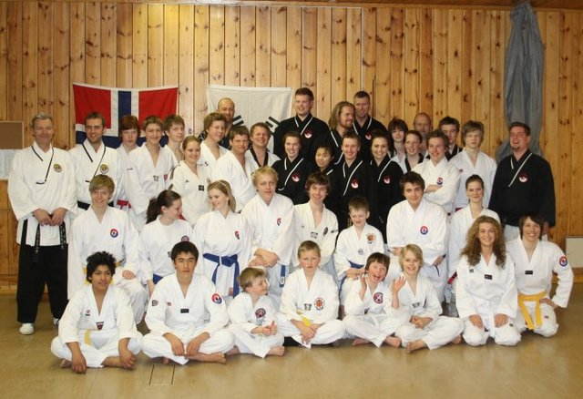

Innlegg
Fin helgesamling på Evje

I helgen var det Weekend-leir i Evje Taekwondo. Én reiste fra vår klubb.
Evje TKD-klubb, som er en liten klubb på rundt 30 medlemmer, holder til 60 km nord for Kristiansand i et lite tettsted som heter Evje. Der ble i det i helgen arrangert treningshelg for både farge- og svartbelter. Helgens instruktører var Svein Anderstuen (7.dan) og hans sønn Morten Anderstuen (4.dan). Arrangementet hadde rundt 40 deltakere, og fra vår klubb dro bare Anders Helmen.
Bilturen fra øst-landet og til Evje var lang og man bruker omtrent 6 timer fra Oslo om man kjører til Evje uten pause, men det er da vel ikke en grunn til å ikke trene? Anders fikk skyss av to TKD-venner fra Hamar, og tok kjøringa som en tur. Programmet for fredagen var registrering, fellestrening og kveldsmat.
Lørdagen startet med felles Ki-gong-trening (Energi-trening og pusteøvelser som ligner litt på Yoga) klokken 07:00. Mange mente dette var en god start på dagen og man føler seg ganske god i kroppen etterpå. Videre var det frokost, etterfulgt av trening, lunsj og to nye treninger. Måten treningene ble organisert på var hallen ble delt i to med sortbelter og 1.kup på den ene siden og alle andre fargebelter på den andre. Treningslokalet var veldig bra og vi hadde god plass til både å trene å sove, for de som overnattet i hallen. Gruppene byttet på å ha de to masterene, så alle fikk trent ganske mye med begge. Fokuset på treningene var mye på teknikk og også mønster, spesielt på treningene til Master Morten. Han er på landslaget i poomse og viste oss hvordan teknikkene skulle gjøres best mulig i henhold til konkuransereglementet, og også noen triks for å forbedre oss generelt i poomse.
På lørdag kveld var mange av oss ute på en restaurant som het "Møteplassen" hvor tapas-buffet var på menyen. Maten var kjempegod og vi fikk til og med kaffe og hjemmelagde kaker med på kjøpet. Vi hadde det veldig koselig alle sammen. Seinere på kvelden gikk noen av de eldre ut på en lokal bar hvor det vistnok skal ha vært ganske bra liv.
Søndag morgen startet også med Ki-gong trening, men denne gangen ikke før klokken 08:00. Så trente vi en gang i grupper, spiste lunsj og hadde en felles fotografering og trening. Avreisen var så kommet. Vi var ikke mange der og det var ikke så stort, men allikevel veldig bra treninger og stemning. Vi var alle glade vi dro, og Anders håper han kan få med flere fra klubben om en slik leir skulle skje igjen.